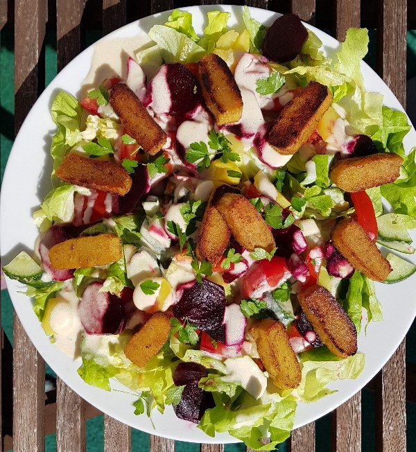
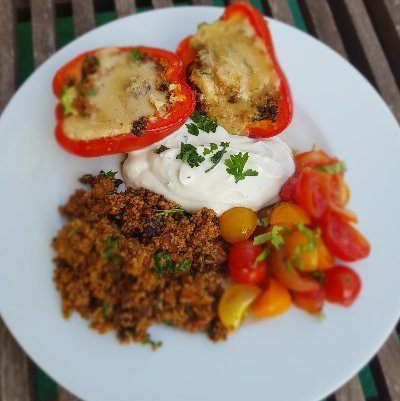
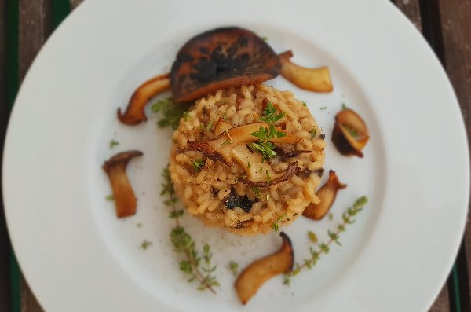
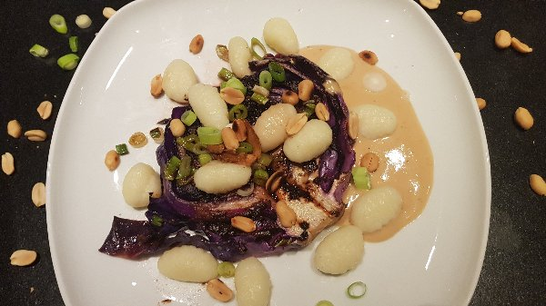
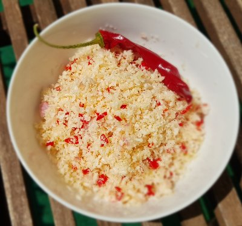
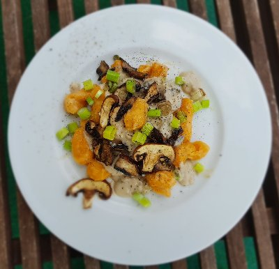
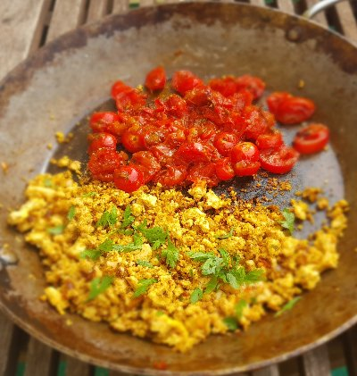
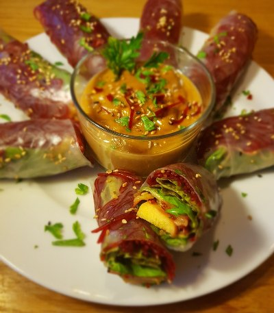
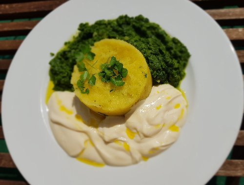

Über Mich

Hallo, schön dass du da bist! Mein Name ist Anna Dandekar und ich liebe Kochen, Backen und Essen. Denn was gibt es Besseres als etwas Schönes mit seinen Händen zu erschaffen, das lecker schmeckt, Menschen erfreut und satt macht? So hat meine Leidenschaft angefangen. Als ich mich v.a. durch mein Studium mehr und mehr mit der Biologie und Biochemie von Menschen und Pflanzen auseinandergesetzt und festgestellt habe, dass Essen auch noch gesund, stark und schön machen kann, gab es kein Halten mehr. Neben meinem Master der Biologie entschied ich mich zusätzlich eine Ausbildung zur Ernährungsberaterin zu machen.
Seitdem lese ich jede wissenschaftliche Publikation zu dem Thema gesundes Essen, Ernährungskrankheiten, Mikrobiom und Pflanzeninhaltsstoffen, die ich in die Finger kriege. Deswegen habe ich mich auch entschieden, mich von der molekularen Zellbiologie und der Laborbank zu verabschieden und nochmal an der TU München den "Master of Nutrition and Biomedicine" (Ernährung und Biomedizin) zu studieren und meine Leidenschaft zum Beruf zu machen. Ich möchte Menschen zeigen, wie lecker gesund sein kann!

![ Sattmacher-Salat mit Lupinenfilet Salat wird oft zu früh weggeworfen, dabei kann man ihn super auffrischen wenn man ihn in kaltes Wasser kurz in den Kühlschrank stellt. Heute gab es ihn mit Tomaten, Gurken, rote Bete und kleinen Kartoffeln - alles gerettet über Foodsharing. Rote Bete und Kartoffeln kann man gut zusammen mit Schale kochen, wenn sie die gleiche Größe haben. Das geht einfach nebenher und sobald man den Salat machen möchte, einfach kurz schälen, Lupinenfilet anbraten und mein Lieblingsdressing dazu. Ich bin immer wieder erstaunt wie unglaublich lecker Gesundes schmecken kann! Dressing 1EL Cashewmus 1EL Apfelessig 1TL Agavendicksaft 1,5EL Hefeflocken 3EL Wasser Alles im Rührbecher vermixen Das Dressing schmeckt richtig cremig, einem french-Dressing sehr ähnlich. Und dazu kommen B-Vitamine aus den Hefeflocken, um die Haare, die Haut und die Nägel schön zu halten. Apfelessig senkt den Cholesterinspiegel und außerdem mögen unsere Darmbakterien ihn ganz gern. Das Cashewmus enthält Protein und Tryptophan. Was soll ich sagen: probiert es aus!](img/original/6.jpg){kind=link}
![ Paprika gefüllt und überbacken Das perfekte Gericht um Reste zu verwerten! Ich hatte Topinambur, Shiitake-Pilze und Räuchertofu übrig, es geht aber auch jedes andere Gemüse wie Zucchini, Aubergine, Karotten etc. Außerdem braucht ihr noch irgendwas zum Füllen, ich hatte Paprika. Für die extra Portion Hülsenfrüchte (denn die sorgen für Protein, Eisen und Ballaststoffe) kommt ein frischer Zitronen-Sojaquark (Zitrone = Vitamin C = erhöhte Eisenaufnahme ;) ) dazu und die Tomaten werden nur mit ein bisschen Balsamico, Olivenöl, Salz und Pfeffer zu einem kleinen Salat. Also: 1. Alles zu verwertende Gemüse + eine Zwiebel und eine Knoblauchzehe in kleine Stücke schneiden, ggf. vorher schälen. Ofen auf Ober-und Unterhitze 200°C vorheizen lassen. 2. Währenddessen eine Tasse Quinoa mit der doppelten Menge Wasser aufkochen und ca. 15-20 min bei leichter Hitze köcheln lassen. Wer stärkehaltiges Gemüse wie Topinambur oder Kartoffeln zu verarbeiten hat, kann dieses kleingeschnitten mit dem Quinoa zusammen kochen, das spart Arbeit ;) 3. Zwiebeln, Knoblauch und Gemüse anbraten, wenn alles leicht gebräunt ist kommt der Quinoa (mit Topinambur) dazu. Gewürzt wird mit Salz, Pfeffer, etwas Chilli, Kreuzkümmel und Sojasauce (ca.2 EL). 4. Die Masse in die aufgeschnittenen Paprikahälften füllen, diese in eine Auflaufform geben und etwas Wasser mit Salz angiesen. 5. Aus 1 EL Mandelmus, 3 EL Wasser, Salz, Pfeffer und 2 EL Hefeflocken eine Creme rühren, diese über die gefüllten Paprika geben und alles im Ofen ca. 25min überbacken lassen. 6. Währenddessen Zitronen-Sojaquark (250g Soja-quark, Salz, Pfeffer, Saft einer halben Zitrone, eine Prise Zucker) und Tomatensalat vorbereiten 7. Paprika aus dem Ofen holen und mit der restlichen Quinoa-Pfanne, dem Quark und Tomaten-Salat anrichten-Guten Apetit!](img/original/7.jpg){kind=link}
![ Pilzrisotto 1. 2 Zwiebeln und 2 Knoblauch-Zehen klein schneiden 2. 2 EL getrocknete Pilze im Mörser fein mahlen 3. 1 Liter Wasser aufkochen, mit Gemüsebrühe und den gemahlenen Pilzen vermischen 4. Pilze deiner Wahl (ich hatte Kräuterseitlinge, Champignons und Parasol) in Scheiben schneiden, ein paar Scheiben zum Anbraten aufheben. 5. Pilze ohne Öl scharf anbraten, sobald sie etwas zusammen geschrumpelt sind, 2 EL Rapsöl dazu und die Zwiebeln. Kurze Zeit später den Knoblauch hinzufügen und ca. 2 Minuten braten. 6. Risotto-Reis dazu, mit Weißwein ablöschen 7. Köcheln lassen, dabei immer wieder umrühren, und jedes mal wenn die Flüssigkeit verdampft ist, mit der Pilz-Brühenmischung aufgießen. Aber immer nur bis der Reis geradeso bedeckt ist. Mit Thymian, Salz, Pfeffer und Muskatnuss würzen. 8. Sobald das Risotto "schlotzig" aber noch bissfest ist, die beiseite gelegten Pilze anbraten, mit Salz und Pfeffer würzen. Das Risotto abschmecken mit: 3 EL Hefeflocken, 1 EL Apfelessig und einer Prise Zucker. 9. Risotto anrichten, mit den angebratenen Pilzen und frischen Thymian garnieren - Guten Appetit!](img/original/8.jpg){kind=link}
![ Angeber-Essen: Rotkohlsteak mit Gnocchi und Erdnussauce Ich wusste nicht wie lecker Rotkohl sein kann! Das sogenannte Rotkohlsteak habe ich nach dem Rezept vom Blog eat-this.org gemacht, den ich euch wärmstens empfehlen kann. Lasst euch nicht abschrecken, dieses Rezept ist verdammt lecker und richtig deftig!! 1. Aus einem Rotkohl-Kopf 2,5 - 3 cm dicke Scheiben schneiden. 2 Zehen Knoblauch in Scheiben schneiden und in 2 EL Olivenöl in einem Topf leicht erwärmen. Dann mit dem Knoblauch-Olivenöl die Kohlkopfscheiben einreiben und mindestens 30 Minuten und bis zu 2 Tage marinieren lassen. 2. Backofen auf 200 °C Ober-/Unterhitze vorheizen. 3. 1 EL Misopaste und 1 EL (vegane) Butter glatt rühren. 4. Rapsöl in eine heiße Gusseisenpfanne (oder eine andere feuerfeste Pfanne) geben und die Rotkohl-Steaks bei hoher Hitze 4 Minuten pro Seite scharf anbraten. 5. Mit einem guten Schuss Weißwein ablöschen, Steaks mit Misobutter bestreichen und anschließend in der Pfanne im Backofen 15-20 Minuten schmoren lassen. 6. Während die "Steaks" im Ofen sind, einen großen Topf mit Salzwasser erhitzen und die Gnocchis nach Packungsangabe kochen (geht natürlich auch selbstgemacht. Dazu im Rezept für Süßkartoffel-Gnocchi die Süßkartoffel durch normale Kartoffeln ersetzen). 7. Für die Sauce 3 EL Erdnussmus mit 9 EL Wasser glatt rühren. Mit Salz, Pfeffer, 1 TL Sojasauce, 1 EL Weißweinessig abschmecken, dann kurz aufkochen lassen bis sie sämig ist. 8. Frühlingszwiebeln schneiden, mit Erdnüssen zusammen in einer Pfanne anrösten. 9. Rotkohlsteaks mit Gnocchis und Erdnuss-sauce anrichten, mit den Zwiebeln und den Erdnüssen bestreuen - Buon Apetite!](img/original/9.jpg){kind=link}
![ Kokos-Sambol Aus allem kann man etwas leckeres zaubern! Vor ein paar Wochen habe ich 2 Kokosnüsse vor der Tonne gerettet, die ich ausgelöst und zu Kokosmilch verarbeitet habe. Die entstandenen Kokosflocken habe ich eingefroren und.... endlich was passendes gerettet: knackige Chillis und Limetten! Daraus wird eine der leckersten Entdeckungen, die ich auf meinen Reisen gemacht habe: Kokos-Sambol! In Sri Lanka wird es als Würzmischung zum Frühstück gegessen - als Europäerin mag ich diese scharf-saure Extranote am liebsten zu Curry! Wer keine ganzen Kokosnüsse hat, nimmt einfach 125g fertige Kokosflocken und lässt sie in etwas Wasser einweichen. Kokos-Sambol Zu den Kokosflocken kommen: 1 kleingeschnittene Zwiebel 1 Knoblauchzehe 2 Chilli Saft zweier Limetten Eine Prise Zucker, Salz und ein Schuss Teriyaki Sauce Alles vermischen, durchziehen lassen und genießen!](img/original/1.jpg){kind=link}
![ Süßkartoffel-Gnocchi mit Champignon-Cashewsoße Meine ersten selbstgemachten Süßkartoffel-Gnocchi! Die Soße ist ganz schnell gemacht und die Gnocchis sind gut vorzubereiten. Und das Beste ist: das Ganze ist auch noch gesund. Nussmus-Soßen sind perfekt um die Extra-Portion Nüsse ins Essen zu bringen. Proteinreicher ist es auch noch! Und wer Vollkornmehl bei den Gnocchis verwendet, hat schon in einem Gericht fast alles an gesunden Nährstoffen beisammen. 1. Schäle und schneide eine große Süßkartoffel oder 2 Kleinere in kleine Stücke und koche sie ca. 10 min. in gesalzenem Wasser weich. 2. Gieße die Süßkartoffeln ab und lasse sie abkühlen. 3. Zermatsche sie mit einer Gabel oder einem Kartoffelstampfer und würze das ganze mit Salz, Pfeffer und Muskatnuss. Nun gibst du zu gleichen Teilen Speisestärke und Vollkornmehl hinzu, bis der Teig nicht mehr klebt. 4. Forme und rolle vier lange Würstel :). Davon kannst du dann die Gnocchis in gewünschter Größe abschneiden und formen. 5. Schneide ein halbes Bund, eine Knoblauchzehe und ca. 8 große Champignons. 6. Brate die Champignons ohne Öl kräftig an. Sobald sie etwas zusammengeschrumpft sind, kommt etwas Rapsöl hinzu und das Weiße der Zwiebeln. Kurze Zeit später kommt der Knoblauch dazu. 7. Vermische 2 EL Cashewmuss mit 6 EL Wasser und 1EL Apfelessig. Gib das Ganze über die Pilze und lass es einmal aufkochen. Würze mit Salz, Pfeffer und Muskatnuss. 8. Koche Salzwasser auf, und stelle die Temperatur zurück, sodass es noch leicht siedet. Gib die Gnocchis hinzu und lasse sie ca. 10 min. im Wasser. 9. Gnocchis abgießen, Soße drüber - endlich fertig! Guten Appetit!](img/original/2.jpg){kind=link}
![ Eisen-Schlemmer-Frühstück Für die Extra-Portion Eisen in deinem Leben empfehle ich dir eine Eisenpfanne. Man glaubt es kaum, aber tatsächlich nimmt man dann über das Essen jedes Mal eine kleine Menge Eisen auf! Die Pflege einer solchen Pfanne unterscheidet sich sehr von einer mit Teflon beschichteten, dafür ist sie seeeehr langlebig und vor allem lösen sich keine bedenklichen Stoffe aus der Beschichtung, sondern nur Eisen;) Außerdem weiß jeder Spitzenkoch, dass Bratkartoffeln nur in so einer Pfanne richtig gut werden! 1. eine kleine Zwiebel schneiden, die Hälfte in die Pfanne geben und mit Olivenöl anbraten. 2. Naturtofu zerbröseln und hinzufügen. Ungefähr 5 Minuten mit anbraten und währenddessen mit Salz, Pfeffer, Muskatnuss, einer Prise Kurkuma, 1 EL Mandelmus und Kala Namak würzen. Kala Namak ist ein sogenanntes "Schwefelsalz" und schmeckt wirklich intensiv nach Ei. Man kann es auch weg lassen, der Tofu wird aber nur damit so richtig "Rührei-ähnlich" 3. Zeitgleich in einer anderen Pfanne die andere Hälfte der Zwiebel und eine halbe geschnittene Knoblauchzehe in Olivenöl anbraten. 2-3 kleingeschnittene Tomaten dazu und kurz schmoren lassen. Wenn die Tomaten anfangen weich zu werden kommt 1 guter EL brauner Zucker hinzu. Karamellisieren lassen, dann 1 EL Tomatenmark dazu und vermischen. Mit Salz, Pfeffer und Majoran abschmecken. 4. "Rührtofu" mit viiiel frischer Petersilie (hat viel Vitamin C und das fördert die Eisenaufnahme!) bestreuen und gleich mit den geschmorten Tomaten und einem richtig leckeren Vollkornbrot anrichten-- Guten Appetit!](img/original/3.jpg){kind=link}
![ Sommerrollen mit Erdnuss-Dip Summer is here! Und Summerrolls auch. Wenn man den Roll mal raus hat, geht es auch recht leicht. :) Einrollen kann man alles, ich habe mich diesmal aber ganz klassisch entschieden: 1. In einer großen Schüssel Limettensaft einer Limette, 1 EL brauner Zucker, eine gepresste Knoblauchzehe, 1 EL Sojasauce und 2 EL Sesamöl miteinander verrühren. Mit Salz und Chilli würzen. 2. In einem kleinen Topf 500ml rote Bete Saft aufkochen, 50g Glasnudeln darin einweichen. Rote Bete-Saft macht eine schöne pinke Färbung, man kann aber die Glasnudeln auch einfach nur mit kochendem Wasser übergießen. Sobald die Nudeln weich sind, in einem Sieb abgießen und abkühlen lassen. 3. Einzelne Blätter vom Salat abzupfen, waschen und trocken schleudern. 3 Karotten schälen und mit dem Sparschäler in Streifen abschälen und die Karottenstreifen in der großen Schüssel mit dem Dressing sammeln. Das Gleiche mit einer Gurke machen, dabei aber den Kern aussparen und wegschmeißen (oder essen ;) ). 4. 2 EL Sesam in einer Pfanne ohne Öl anrösten und über die Karotten-Gurken-Streifen-Mischung geben, alles vermischen und mind. 10 minuten ziehen lassen. Frischen Koriander oder Petersilie hacken und auch zu der Mischung geben. 5. Tofu deiner Geschmackswahl (ich empfehle etwas asiatisches) in 1cm dicke Streifen schneiden. 6. Jetzt geht es los: Die Reisblätter werden kurz in kaltem Wasser eingeweicht und abgetupft. Dann kommt pro Reisblatt 1 Salatblatt, etwas rote Nudeln, etwas Karotten-Gurken-Mischung und ein Streifen Tofu darauf und wird eingerollt. Ich empfehle am Anfang immer weniger zu nehmen als man vorhat, man unterschätzt die Menge jedes Mal... 7. Für den Dip mache ich es mir einfach und nehme den Rest der Karotten-Gurken-Marinade (wenn er übrig ist) als Basis. Dann 2 EL Erdnussmus oder -Butter mit der doppelten Menge Kokosmilch glatt rühren und dazu geben. Mit Chilli, Sojasauce, Limettensaft und frischem Koriander abschmecken. Wenn ihr Erdnussmus anstatt -Butter nehmt, muss auch noch eine kleine Prise Zucker hinzu. Und dann wird gedippt!!](img/original/4.jpg){kind=link}
![ Soulfood: Kartoffelbrei, Spinat und Limetten-Soja-Quark Wenn es mal schnell gehen muss:) Kartoffeln sind ein tolles, sättigendes Gemüse, das leider einen viel zu schlechten Ruf hat. Aber tatsächlich sind Kartoffeln mit ca. 75 Kalorien pro 100 g ein Schlankmacher! Günstig und regional sind sie auch noch. 1. Kartoffeln schälen, schneiden, kochen und mit einem Stampfer zu Brei manschen. Dazu kommt ein guter Schluck Pflanzenmilch, Muskat, etwas gemahlener Kümmel, Salz und Pfeffer. Wer mag, fügt noch einen guten Schuss Olivenöl hinzu. Ohne zusätzliche Butter ist Kartoffelbrei sogar ziemlich kalorienarm. 2. Den Spinat habe ich tiefgefroren gekauft, ohne irgendeinen blubb - nur gehackt. Den würze ich noch mit Muskat, Salz und Pfeffer und für die Extra-Portion Cremigkeit kommt 1TL Cashewmus dazu. 3. Als Protein- und Hülsenfrucht-Lieferant kommt noch Sojaquark ins Spiel. Zusammen mit Limettensaft, Salz und einer großzügigen Portion Leinöl (Omega-3-Fettsäuren) ist er nicht nur lecker, sondern auch super gesund. Guten Appetit!](img/original/5.jpg){kind=link}